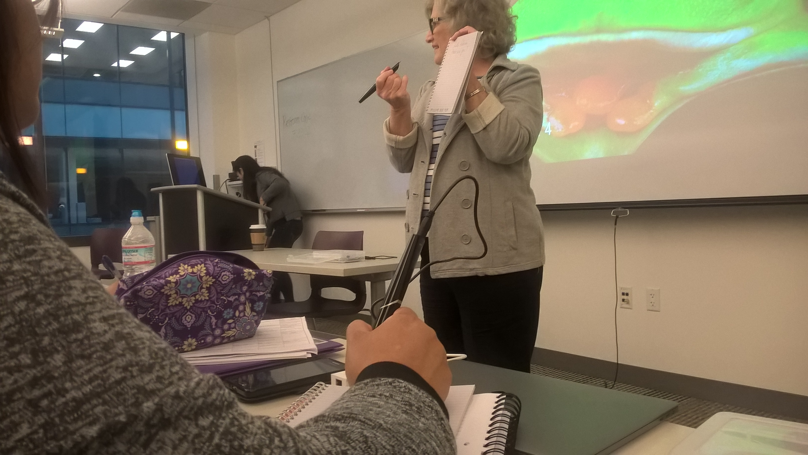
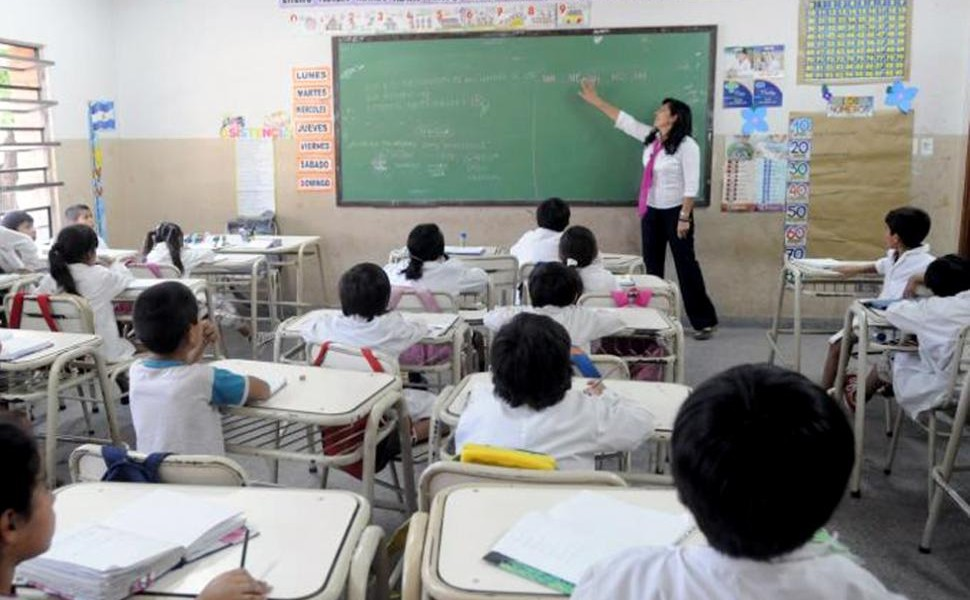
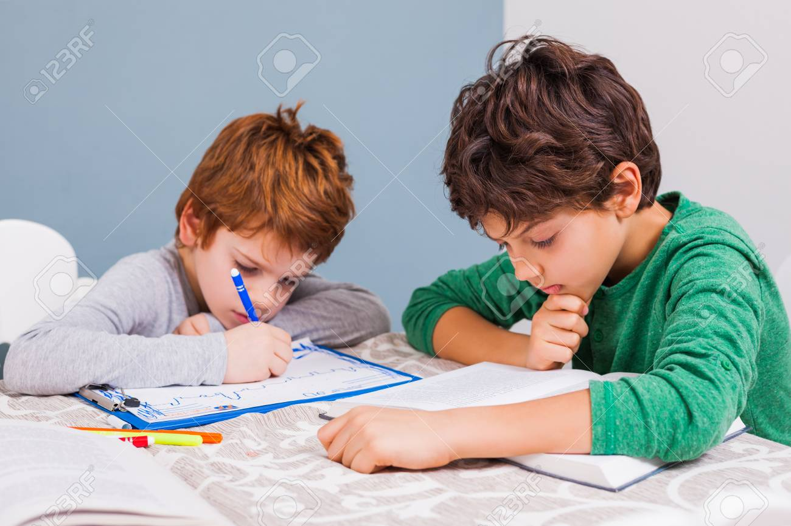
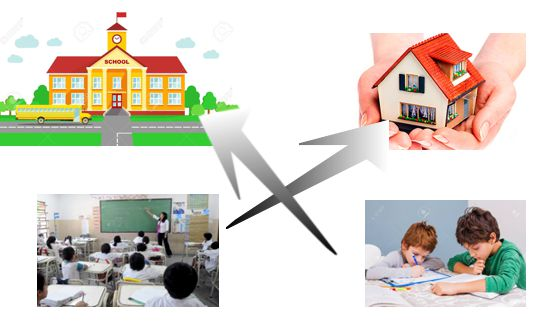
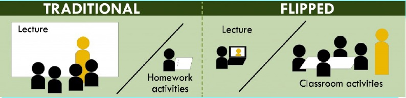

(Dictando la clase con traductora en español)


Lo que tradicionalmente se hacía en clase (es decir, la lección,
presentación de tema, aprendizaje, etc.) ahora se hace en casa.
Y lo que tradicionalmente se hizo en
el hogar (es decir, los problemas de práctica, los ejercicios, "deberes", etc.) ahora se hace en clase.

En un aula Flipped, la lección se presenta en un formulario de video tutorial para estudiantes para mirar en casa antes de clase.
